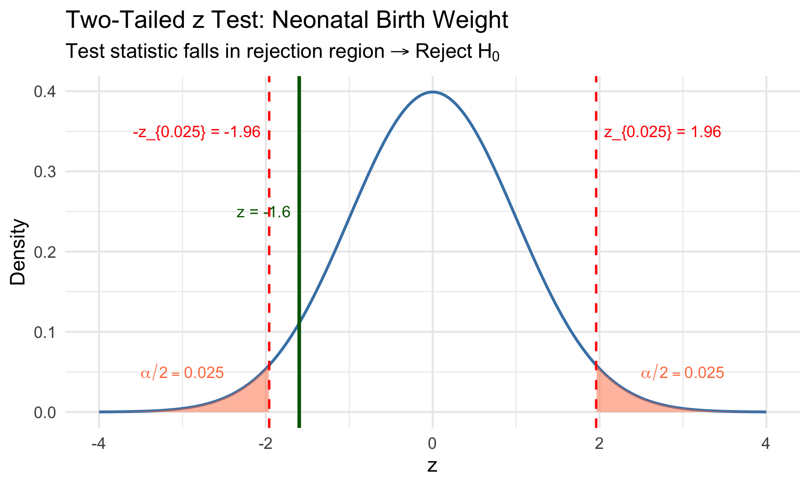
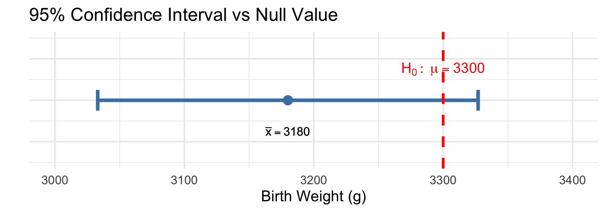
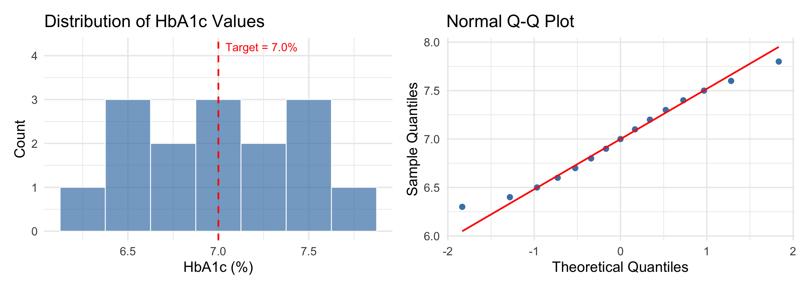
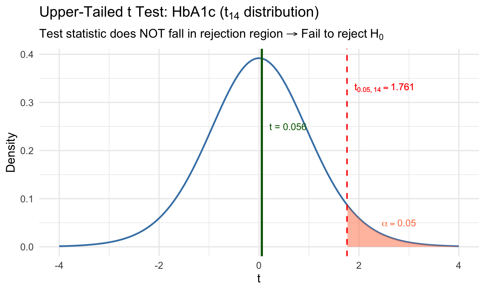
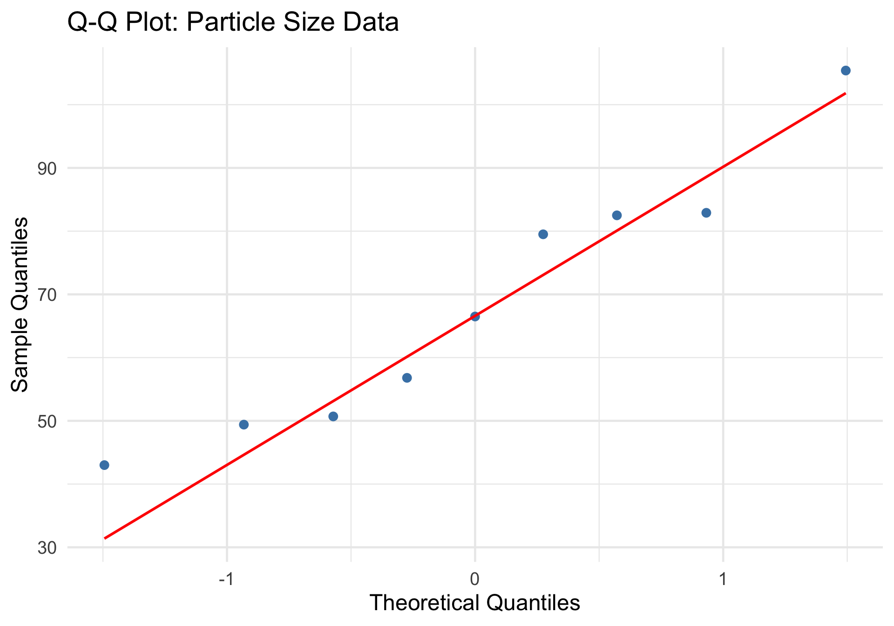
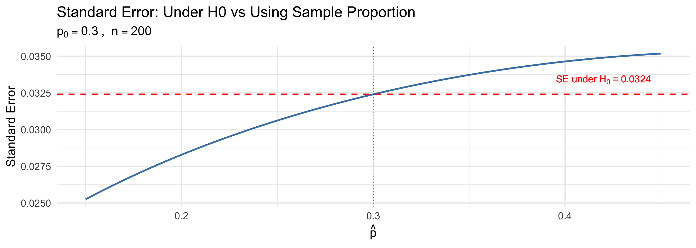
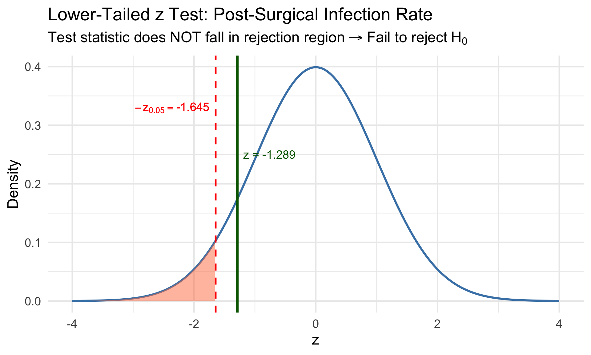
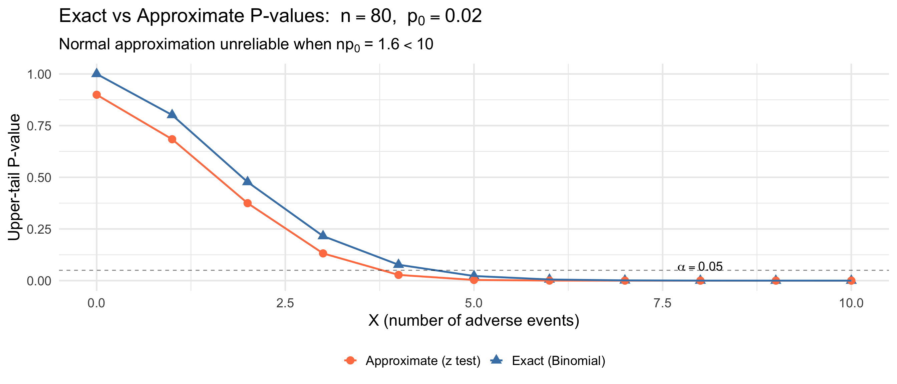
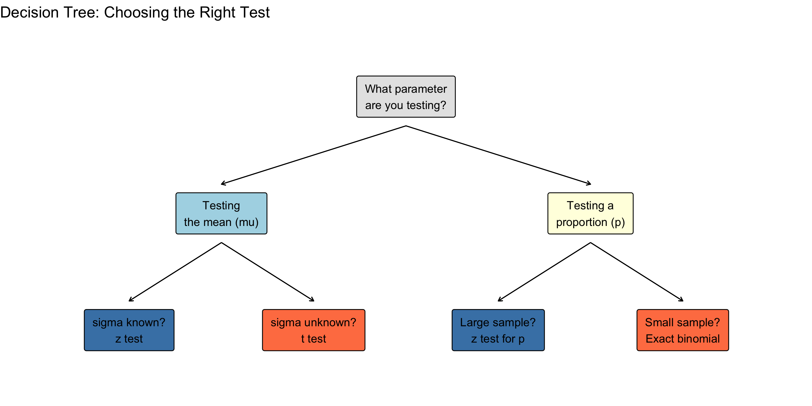

Lesson 13: Tests About a Population Mean and Proportion
BSTA 551: Statistical Inference
Jessica Minnier
2026-02-09
Lesson 13: Tests About a Population Mean and Proportion
Review: Where We Left Off
Lesson 12: Introduction to Hypothesis Testing
Null and alternative hypotheses (\(H_0\) vs \(H_a\))
Test statistics and rejection regions
Type I error (\(\alpha\)) and Type II error (\(\beta\))
Power = \(1 - \beta\)
Connection between CIs and hypothesis tests
Today’s Goals:
Apply the one-sample z test for \(\mu\) (\(\sigma\) known)
Develop the one-sample t test for \(\mu\) (\(\sigma\) unknown)
Understand when to use z vs t tests
Conduct tests about a population proportion \(p\)
Implement all tests in R with medical research examples
Roadmap for Today
Topic
Assumption
Test Statistic
Textbook
z test for \(\mu\)
\(\sigma\) known
\(Z = \frac{\bar{X} - \mu_0}{\sigma/\sqrt{n}}\)
Devore 9.2
t test for \(\mu\)
\(\sigma\) unknown
\(T = \frac{\bar{X} - \mu_0}{S/\sqrt{n}}\)
Devore 9.2
z test for \(p\)
Large \(n\)
\(Z = \frac{\hat{p} - p_0}{\sqrt{p_0(1-p_0)/n}}\)
Devore 9.3
Connection to CIs
Each test today has a corresponding confidence interval from Lessons 7–8. The CI contains all values of the parameter that would not be rejected by the corresponding test.
The One-Sample z Test (Devore 9.2)
Setup and Assumptions
Assumptions:
\(X_1, X_2, \ldots, X_n\) is a random sample from a normal distribution
The population standard deviation \(\sigma\) is known
Null hypothesis:\(H_0: \mu = \mu_0\)
Test statistic:
\[Z = \frac{\bar{X} - \mu_0}{\sigma / \sqrt{n}}\]
Under \(H_0\): \(Z \sim N(0, 1)\)
The One-Sample z Test: Rejection Regions
One-Sample z Test (Devore 9.2)
Alternative
Rejection Region
Type
\(H_a: \mu > \mu_0\)
\(z \geq z_\alpha\)
Upper-tailed
\(H_a: \mu < \mu_0\)
\(z \leq -z_\alpha\)
Lower-tailed
\(H_a: \mu \neq \mu_0\)
\(|z| \geq z_{\alpha/2}\)
Two-tailed
Key idea: The standardized test statistic \(Z\) measures how many standard errors \(\bar{x}\) is from \(\mu_0\). Rejection occurs when this distance is “too large” in the direction specified by \(H_a\).
Seven-Step Procedure (Devore 9.2)
Recommended Steps for Any Hypothesis Test
Identify the parameter of interest and describe it in context
State the null and alternative hypotheses
Check assumptions for the test procedure
Write the formula for the test statistic
State the rejection region for the chosen \(\alpha\)
Compute the test statistic value from sample data
Decide whether to reject \(H_0\) and state the conclusion in context
We will use this structured approach throughout the course.
Example: Neonatal Birth Weight Screening
Setting: A neonatal unit monitors the average birth weight of infants. Historically, the mean birth weight in this hospital is 3300 g with known \(\sigma = 450\) g. After a change in prenatal care protocol, a sample of \(n = 36\) births yields \(\bar{x} = 3180\) g.
Question: Is there evidence that the new protocol has changed the mean birth weight?
Step 1:\(\mu\) = true mean birth weight (g) under the new protocol
Step 2:\(H_0: \mu = 3300\) vs \(H_a: \mu \neq 3300\) (two-tailed — either direction is concerning)
Step 3:\(\sigma = 450\) is known; \(n = 36\) is large enough for CLT
if (abs(z_stat) >= z_crit) {cat("Decision: Reject H0 at alpha = 0.05\n\n")cat("Conclusion: There is statistically significant evidence that\n")cat("the true mean birth weight under the new protocol differs from 3300 g.")} else {cat("Decision: Fail to reject H0 at alpha = 0.05\n\n")cat("Conclusion: There is insufficient evidence that the true mean\n")cat("birth weight differs from 3300 g under the new protocol.")}
Decision: Fail to reject H0 at alpha = 0.05
Conclusion: There is insufficient evidence that the true mean
birth weight differs from 3300 g under the new protocol.
Visualizing the Test
Code
z_seq <-seq(-4, 4, length.out =500)y <-dnorm(z_seq)tibble(z = z_seq, y = y) |>ggplot(aes(x = z, y = y)) +geom_line(linewidth =1.2, color ="steelblue") +geom_area(data =tibble(z = z_seq[z_seq >= z_crit], y =dnorm(z_seq[z_seq >= z_crit])),aes(x = z, y = y), fill ="coral", alpha =0.5) +geom_area(data =tibble(z = z_seq[z_seq <=-z_crit], y =dnorm(z_seq[z_seq <=-z_crit])),aes(x = z, y = y), fill ="coral", alpha =0.5) +geom_vline(xintercept =c(-z_crit, z_crit), linetype ="dashed", color ="red", linewidth =1) +geom_vline(xintercept = z_stat, color ="darkgreen", linewidth =1.5) +annotate("text", x = z_crit +0.1, y =0.35, hjust =0, size =5, color ="red",label =paste0("z_{0.025} = ", round(z_crit, 2))) +annotate("text", x =-z_crit -0.1, y =0.35, hjust =1, size =5, color ="red",label =paste0("-z_{0.025} = ", round(-z_crit, 2))) +annotate("text", x = z_stat -0.1, y =0.25, hjust =1, size =5, color ="darkgreen",label =paste0("z = ", round(z_stat, 2))) +annotate("text", x =3, y =0.05, label =expression(alpha/2==0.025), color ="coral", size =5) +annotate("text", x =-3, y =0.05, label =expression(alpha/2==0.025), color ="coral", size =5) +labs(x ="z", y ="Density",title ="Two-Tailed z Test: Neonatal Birth Weight",subtitle =expression("Test statistic falls in rejection region"~symbol("\256") ~"Reject"~ H[0]))

Confirming with a Confidence Interval
Recall the CI-test duality: the 95% CI contains all \(\mu_0\) values that would not be rejected.
# 95% CI for muci_lower <- xbar - z_crit * seci_upper <- xbar + z_crit * secat("95% CI for mu: (", round(ci_lower, 1), ",", round(ci_upper, 1), ")\n")
95% CI for mu: ( 3033 , 3327 )
cat("Null value mu_0 = 3300\n\n")
Null value mu_0 = 3300
cat("Since 3300 is NOT in the CI, we reject H0 -- consistent with our test!")
Since 3300 is NOT in the CI, we reject H0 -- consistent with our test!
Code
tibble(x = xbar, lower = ci_lower, upper = ci_upper) |>ggplot(aes(y =1)) +geom_errorbarh(aes(xmin = lower, xmax = upper), height =0.1, linewidth =2, color ="steelblue") +geom_point(aes(x = x), size =5, color ="steelblue") +geom_vline(xintercept =3300, linetype ="dashed", color ="red", linewidth =1.5) +annotate("text", x =3300, y =1.15, label =expression(H[0]:~mu ==3300), color ="red", size =6) +annotate("text", x = xbar, y =0.85, size =5,label =bquote(bar(x) == .(xbar))) +coord_cartesian(xlim =c(3000, 3400), ylim =c(0.7, 1.3)) +labs(x ="Birth Weight (g)", y ="",title ="95% Confidence Interval vs Null Value") +theme(axis.text.y =element_blank(), axis.ticks.y =element_blank())

Type II Error and Power for the z Test (Devore 9.2)
For the z test, we have closed-form expressions for \(\beta(\mu')\):
# How many births to detect a 100g decrease with 80% power?delta <-100# clinically meaningful differencealpha <-0.05beta_target <-0.20# want power = 0.80sigma <-450# Two-tailed testn_needed <- (sigma * (qnorm(1- alpha/2) +qnorm(1- beta_target)) / delta)^2cat("Sample size needed:", ceiling(n_needed), "births")
Sample size needed: 159 births
Clinical Relevance
In medical research, we should determine the clinically meaningful difference before planning the study. A 100 g difference in birth weight may be clinically important; a 10 g difference likely is not.
The One-Sample t Test (Devore 9.2)
From z to t: The Realistic Case
The Problem: In practice, we rarely know\(\sigma\).
Solution: Replace \(\sigma\) with the sample standard deviation \(S\):
Setting: A diabetes clinic monitors glycated hemoglobin (HbA1c). The target for well-controlled diabetes is HbA1c \(\leq\) 7.0%. A sample of \(n = 15\) patients on a new medication yields:
Question: Is there evidence that the true mean HbA1c for patients on this medication exceeds the 7.0% target?
HbA1c Example: Check Assumptions
Step 3: Check normality assumption.
Code
p1 <-tibble(hba1c = hba1c) |>ggplot(aes(x = hba1c)) +geom_histogram(bins =7, fill ="steelblue", color ="white", alpha =0.7) +geom_vline(xintercept =7.0, linetype ="dashed", color ="red", linewidth =1) +labs(x ="HbA1c (%)", y ="Count", title ="Distribution of HbA1c Values") +annotate("text", x =7.0, y =4.2, label ="Target = 7.0%", color ="red", hjust =-0.1, size =5)p2 <-tibble(hba1c = hba1c) |>ggplot(aes(sample = hba1c)) +stat_qq(size =3, color ="steelblue") +stat_qq_line(color ="red", linewidth =1) +labs(x ="Theoretical Quantiles", y ="Sample Quantiles",title ="Normal Q-Q Plot")p1 + p2

The Q-Q plot shows approximately linear pattern — normality assumption is reasonable for \(n = 15\).
HbA1c Example: Conduct the t Test
# Step 1-2: mu = true mean HbA1c; H0: mu = 7.0 vs Ha: mu > 7.0mu0 <-7.0alpha <-0.05# Step 4: Test statisticse <- s /sqrt(n)t_stat <- (xbar - mu0) / secat("Test statistic: t =", round(t_stat, 3), "\n")
Step 7 Interpretation: There is insufficient evidence at \(\alpha = 0.05\) to conclude that the true mean HbA1c exceeds the 7.0% target.
Using R’s t.test() Function
# R's built-in t.test functiont_result <-t.test(hba1c, mu =7.0, alternative ="greater")t_result
One Sample t-test
data: hba1c
t = 0.056254, df = 14, p-value = 0.478
alternative hypothesis: true mean is greater than 7
95 percent confidence interval:
6.797935 Inf
sample estimates:
mean of x
7.006667
df_t <- n -1x_seq <-seq(-4, 4, length.out =500)y <-dt(x_seq, df = df_t)tibble(x = x_seq, y = y) |>ggplot(aes(x = x, y = y)) +geom_line(linewidth =1.2, color ="steelblue") +geom_area(data =tibble(x = x_seq[x_seq >= t_crit],y =dt(x_seq[x_seq >= t_crit], df = df_t)),aes(x = x, y = y), fill ="coral", alpha =0.5) +geom_vline(xintercept = t_crit, linetype ="dashed", color ="red", linewidth =1) +geom_vline(xintercept = t_stat, color ="darkgreen", linewidth =1.5) +annotate("text", x = t_crit +0.15, y =0.33, hjust =0, size =5, color ="red",label =bquote(t[list(0.05, 14)] == .(round(t_crit, 3)))) +annotate("text", x = t_stat +0.15, y =0.25, hjust =0, size =5, color ="darkgreen",label =paste0("t = ", round(t_stat, 3))) +annotate("text", x =2.8, y =0.05, label =expression(alpha ==0.05), color ="coral", size =5) +labs(x ="t", y ="Density",title =expression("Upper-Tailed t Test: HbA1c ("* t[14] *" distribution)"),subtitle =expression("Test statistic does NOT fall in rejection region"~symbol("\256") ~"Fail to reject"~ H[0]))

Example: Body Temperature Revisited (Two-Tailed t Test)
The widely cited “normal” body temperature of 98.6°F comes from a 19th century study. Mackowiak et al. (1992, JAMA) measured temperatures in 130 healthy adults.
# Simulated data consistent with the Mackowiak et al. findingsset.seed(1992)body_temp <-rnorm(130, mean =98.2, sd =0.73)cat("n =", length(body_temp), "\n")
n = 130
cat("x-bar =", round(mean(body_temp), 3), "\n")
x-bar = 98.195
cat("s =", round(sd(body_temp), 3))
s = 0.668
Hypotheses:\(H_0: \mu = 98.6\) vs \(H_a: \mu \neq 98.6\)
Body Temperature: t Test in R
# Two-tailed t testtemp_test <-t.test(body_temp, mu =98.6, alternative ="two.sided")temp_test
One Sample t-test
data: body_temp
t = -6.9161, df = 129, p-value = 1.934e-10
alternative hypothesis: true mean is not equal to 98.6
95 percent confidence interval:
98.07896 98.31076
sample estimates:
mean of x
98.19486
cat("Since 98.6 is NOT in the 95% CI, we reject H0.\n")
Since 98.6 is NOT in the 95% CI, we reject H0.
cat("Evidence strongly suggests true mean body temperature differs from 98.6 F.")
Evidence strongly suggests true mean body temperature differs from 98.6 F.
When Can We Use the t Test?
Guidelines for the One-Sample t Test
Normality is critical when \(n\) is small:
Sample Size
Guideline
\(n < 15\)
Use t test only if data appear close to normal (check Q-Q plot)
\(15 \leq n \leq 40\)
Mild skewness is acceptable; avoid if heavily skewed or outliers present
\(n > 40\)
t test is robust to non-normality by CLT; can use for most distributions
Practical Advice (Devore 9.2)
For moderate sample sizes, examine a normal probability plot (Q-Q plot) before using the t test. If the data show substantial departures from normality, consider a bootstrap test (Lesson 15) or a nonparametric test instead.
Simulation: Coverage of the t Test Under Non-Normality
Code
set.seed(551)n_sims <-10000alpha <-0.05mu0 <-5# Simulate Type I error rate for different distributionssimulate_type1 <-function(rdist, n, ...) { rejections <-replicate(n_sims, { x <-rdist(n, ...) test <-t.test(x, mu = mu0) test$p.value < alpha })mean(rejections)}results <-tibble(Distribution =c("Normal", "Normal", "Exp (shifted)", "Exp (shifted)", "t(3) (shifted)", "t(3) (shifted)"),n =rep(c(10, 50), 3),`Type I Error Rate`=c(simulate_type1(rnorm, 10, mean =5, sd =1),simulate_type1(rnorm, 50, mean =5, sd =1),simulate_type1(\(n, ...) rexp(n, rate =1) +4, 10),simulate_type1(\(n, ...) rexp(n, rate =1) +4, 50),simulate_type1(\(n, ...) rt(n, df =3) +5, 10),simulate_type1(\(n, ...) rt(n, df =3) +5, 50) ))results |>mutate(`Type I Error Rate`=round(`Type I Error Rate`, 4))
# A tibble: 6 × 3
Distribution n `Type I Error Rate`
<chr> <dbl> <dbl>
1 Normal 10 1
2 Normal 50 1
3 Exp (shifted) 10 0.0989
4 Exp (shifted) 50 0.066
5 t(3) (shifted) 10 0.0394
6 t(3) (shifted) 50 0.047
The t test maintains \(\alpha \approx 0.05\) well for normal and heavy-tailed symmetric distributions, but may be anticonservative for skewed distributions with small \(n\).
Textbook Example: Particle Size (Devore Example 9.12)
Devore Example 9.12: Particulate Matter
Roadside measurements of particle sizes (\(d_{50}\) in microns) at \(n = 9\) assays near a North Carolina highway:
Previous studies indicated that the typical \(d_{50}\) value alongside similar roads is 44 microns.
Hypotheses:\(H_0: \mu = 44\) vs \(H_a: \mu \neq 44\) at \(\alpha = 0.01\).
Devore Example 9.12: Solution
# Check normality
Code
tibble(d50 = d50) |>ggplot(aes(sample = d50)) +stat_qq(size =3, color ="steelblue") +stat_qq_line(color ="red", linewidth =1) +labs(title ="Q-Q Plot: Particle Size Data", x ="Theoretical Quantiles", y ="Sample Quantiles")

Devore Example 9.12: Solution
# t testt.test(d50, mu =44, alternative ="two.sided", conf.level =0.99)
One Sample t-test
data: d50
t = 3.5904, df = 8, p-value = 0.007081
alternative hypothesis: true mean is not equal to 44
99 percent confidence interval:
45.60481 91.43964
sample estimates:
mean of x
68.52222
Since \(|t| = 3.59 > t_{0.005, 8} = 3.355\), we reject \(H_0\) at \(\alpha = 0.01\). The data provides strong evidence that the true mean \(d_{50}\) at this site differs from 44 microns.
Textbook Example: Tip Percentages (Devore Example 9.13)
Devore Example 9.13: Large-Sample t Test
A sample of \(n = 70\) tip percentages at a restaurant. Summary statistics: \(\bar{x} = 17.986\), \(s = 5.937\).
Question: Is there evidence that the true average tip percentage exceeds 15%?
# Given summary statistics (large n, don't need raw data)xbar_tip <-17.986s_tip <-5.937n_tip <-70mu0_tip <-15alpha <-0.05# t test statisticse_tip <- s_tip /sqrt(n_tip)t_stat_tip <- (xbar_tip - mu0_tip) / se_tipt_crit_tip <-qt(1- alpha, df = n_tip -1)cat("t =", round(t_stat_tip, 2), "\n")
t = 4.21
cat("t_{0.05, 69} =", round(t_crit_tip, 3), "\n")
t_{0.05, 69} = 1.667
cat("Decision:", ifelse(t_stat_tip >= t_crit_tip, "Reject H0", "Fail to reject H0"))
Decision: Reject H0
Note: With \(n = 70 > 40\), the t test does not require a normal population distribution. The data are positively skewed, but the large sample makes the test valid by the CLT.
Tests About a Population Proportion (Devore 9.3)
Testing a Population Proportion
Setting: We want to test a claim about the population proportion \(p\) of “successes.”
Data:\(X\) = number of successes in a random sample of size \(n\), where \(X \sim \text{Binomial}(n, p)\).
Test statistic:\(\displaystyle z = \frac{\hat{p} - p_0}{\sqrt{p_0(1-p_0)/n}}\)
Alternative
Rejection Region
\(H_a: p > p_0\)
\(z \geq z_\alpha\)
\(H_a: p < p_0\)
\(z \leq -z_\alpha\)
\(H_a: p \neq p_0\)
\(|z| \geq z_{\alpha/2}\)
Validity condition:\(np_0 \geq 10\) and \(n(1-p_0) \geq 10\)
Key point: Under \(H_0\), we use \(p_0\) (not \(\hat{p}\)) in the standard error! This differs from the CI formula where we used \(\hat{p}\) (Wald) or the score approach.
Why \(p_0\) in the Standard Error?
Code
# Compare SE under H0 vs using p-hatp0 <-0.30n <-200phat_vals <-seq(0.15, 0.45, by =0.001)se_h0 <-sqrt(p0 * (1- p0) / n)se_wald <-sqrt(phat_vals * (1- phat_vals) / n)p1 <-tibble(phat = phat_vals, se = se_wald) |>ggplot(aes(x = phat, y = se)) +geom_line(linewidth =1.2, color ="steelblue") +geom_hline(yintercept = se_h0, linetype ="dashed", color ="red", linewidth =1) +geom_vline(xintercept = p0, linetype ="dotted", alpha =0.5) +annotate("text", x =0.42, y = se_h0 +0.001, color ="red", size =5,label =bquote("SE under"~ H[0] ~"="~ .(round(se_h0, 4)))) +labs(x =expression(hat(p)), y ="Standard Error",title ="Standard Error: Under H0 vs Using Sample Proportion",subtitle =expression(p[0] ==0.30~", "~ n ==200))p1

Reasoning: When testing, we assume \(H_0\) is true and ask “how unlikely is the data?” So we use \(p_0\). When estimating (CI), we don’t assume a specific value for \(p\), so we use \(\hat{p}\).
Example: Post-Surgical Infection Rate
Setting: The national rate of post-surgical site infections is 2.5% for a certain procedure. A hospital implements a new sterilization protocol and observes 8 infections among 500 surgeries.
Question: Has the new protocol reduced the infection rate?
# Datax <-8# infections observedn <-500# total surgeriesp_hat <- x / np0 <-0.025# national ratecat("Sample proportion: p-hat =", p_hat, "\n")
Sample proportion: p-hat = 0.016
cat("Expected under H0:", n * p0, "infections\n")
Expected under H0: 12.5 infections
# Check validity: np0 and n(1-p0)cat("np0 =", n * p0, ">= 10?", n * p0 >=10, "\n")
np0 = 12.5 >= 10? TRUE
cat("n(1-p0) =", n * (1- p0), ">= 10?", n * (1- p0) >=10)
n(1-p0) = 487.5 >= 10? TRUE
Infection Rate: Conduct the Test
# H0: p = 0.025 vs Ha: p < 0.025 (lower-tailed)alpha <-0.05# Test statisticse_h0 <-sqrt(p0 * (1- p0) / n)z_stat <- (p_hat - p0) / se_h0z_crit <-qnorm(alpha) # lower-tailed critical valuecat("z =", round(z_stat, 3), "\n")
if (z_stat <= z_crit) {cat("Decision: Reject H0\n")cat("Conclusion: Evidence that the new protocol reduces infection rate.")} else {cat("Decision: Fail to reject H0\n")cat("Conclusion: Insufficient evidence that the new protocol\n")cat("reduces infection rate below the national 2.5%.")}
Decision: Fail to reject H0
Conclusion: Insufficient evidence that the new protocol
reduces infection rate below the national 2.5%.
Visualizing the Proportion Test
Code
z_seq <-seq(-4, 4, length.out =500)y <-dnorm(z_seq)tibble(z = z_seq, y = y) |>ggplot(aes(x = z, y = y)) +geom_line(linewidth =1.2, color ="steelblue") +geom_area(data =tibble(z = z_seq[z_seq <=qnorm(alpha)],y =dnorm(z_seq[z_seq <=qnorm(alpha)])),aes(x = z, y = y), fill ="coral", alpha =0.5) +geom_vline(xintercept = z_crit, linetype ="dashed", color ="red", linewidth =1) +geom_vline(xintercept = z_stat, color ="darkgreen", linewidth =1.5) +annotate("text", x = z_crit -0.1, y =0.33, hjust =1, size =5, color ="red",label =bquote(-z[0.05] == .(round(z_crit, 3)))) +annotate("text", x = z_stat +0.1, y =0.25, hjust =0, size =5, color ="darkgreen",label =paste0("z = ", round(z_stat, 3))) +labs(x ="z", y ="Density",title ="Lower-Tailed z Test: Post-Surgical Infection Rate",subtitle =expression("Test statistic does NOT fall in rejection region"~symbol("\256") ~"Fail to reject"~ H[0]))

What Does prop.test() Actually Do?
R’s prop.test() performs the score test for a population proportion — a test based on the score pivot used in the score interval in Lesson 8. Recall that the pivot: \[Z_{score} = \frac{U(\theta)}{\sqrt{I_n(\theta)}} \xrightarrow{d} N(0,1)\]
and for a Bernoulli sample: \[Z_{score} = \frac{\hat{p} - p}{\sqrt{p(1-p)/n}}\] This is exactly the z statistic we computed by hand above. The function prop.test() reports the squared version under \(H_0\):
If \(Z \sim N(0,1)\), then \(Z^2 \sim \chi^2_1\) (chi-squared with 1 df). The score test for proportions can equivalently be expressed as a z test or a \(\chi^2\) test — they give exactly the same p-value.
prop.test() is the Score Test
# Our z test by handz_stat_manual <- (p_hat - p0) /sqrt(p0 * (1- p0) / n)cat("Manual z statistic:", round(z_stat_manual, 3), "\n")
# prop.test computes the same thing as chi-squaredprop_result <-prop.test(x =8, n =500, p =0.025, alternative ="less", correct =FALSE)cat("prop.test chi-squared:", round(prop_result$statistic, 3), "\n")
The \(X^2\) statistic from prop.test() equals \(z^2\) from our manual calculation!
Connection to the Score Interval (Lesson 8)
In Lesson 8, we derived the Score (Wilson) confidence interval by inverting the score test. Recall:
The score interval collects all values \(p\) satisfying: \[\left|\frac{\hat{p} - p}{\sqrt{p(1-p)/n}}\right| \leq z_{\alpha/2}\]
The key difference from the Wald interval: the score approach keeps the parameter \(p\) in the standard error, rather than plugging in \(\hat{p}\), and when we are “inverting the test statistic” we no longer use the null \(p_0\) but a general \(p\) that we need to solve for.
Connection to the Score Interval (Lesson 8 prop.test)
The CI returned by prop.test() is exactly the Score (Wilson) interval:
# prop.test returns the Score (Wilson) CIcat("Score CI from prop.test():\n")
The relationship between the Wald test, Score test, and Likelihood Ratio test is a fundamental concept in statistical inference (we’ll see the LRT in Lesson 15):
When testing\(H_0: p = p_0\), we use \(p_0\) in the SE (score test). The z test for proportions from Devore 9.3 is the score test. The CI from inverting this test is the Score (Wilson) interval from Lesson 8 — not the Wald interval.
prop.test() Options
# Full output from prop.test (using broom for tidy results)prop.test(x =8, n =500, p =0.025, alternative ="less", correct =FALSE) |>tidy() |>select(estimate, statistic, p.value, conf.low, conf.high, method)
alternative: “two.sided” (default), “less”, or “greater”
The conf.int returned is always the Score (Wilson) CI, regardless of the alternative
The Exact Binomial Test
When the Normal Approximation Fails
The large-sample z test relies on: \[\frac{\hat{p} - p_0}{\sqrt{p_0(1-p_0)/n}} \;\dot{\sim}\; N(0, 1)\]
This approximation requires \(np_0 \geq 10\) and \(n(1-p_0) \geq 10\).
What do we do when these conditions fail? For example:
Testing if a rare adverse event rate differs from 1% with only 50 patients (\(np_0 = 0.5\))
Evaluating a new surgical technique on 15 patients
Answer: Use the exact binomial test, which works directly with the binomial distribution — no approximation needed!
Deriving the Exact Test from First Principles
Setup: Let \(X\) = number of successes in \(n\) independent Bernoulli trials.
Under \(H_0: p = p_0\), we know exactly: \[X \sim \text{Binomial}(n, p_0)\]
\[P(X = k \mid p_0) = \binom{n}{k} p_0^k (1 - p_0)^{n-k}, \quad k = 0, 1, \ldots, n\]
The test statistic is simply \(X\) itself — the count of successes. No standardization needed!
Why “Exact”?
The z test is approximate because it relies on the CLT approximation \(\hat{p} \dot{\sim} N(p, p(1-p)/n)\). The binomial test is exact because it uses the actual, known distribution of \(X\) under \(H_0\) — no asymptotics required.
Rejection Regions for the Exact Binomial Test
For the upper-tailed test \(H_a: p > p_0\), we reject for large \(X\):
The rejection region is \(\{c, c+1, \ldots, n\}\) where \(c\) is chosen so that: \[P(X \geq c \mid p = p_0) = \sum_{k=c}^{n} \binom{n}{k} p_0^k(1-p_0)^{n-k} \leq \alpha\]
Complication with discrete distributions: Because \(X\) is discrete, we generally cannot find \(c\) such that \(P(X \geq c) = \alpha\) exactly.
Instead, we choose \(c\) as the smallest value such that \(P(X \geq c \mid p_0) \leq \alpha\). This means the actual significance level is often less than\(\alpha\) — the test is conservative (Devore 9.3).
Computing the Exact P-Value
The p-value for the exact binomial test is the probability, under \(H_0\), of observing a result as extreme or more extreme than the observed data:
cat("Since", round(p_lower, 4), "> 0.05, we fail to reject H0")
Since 0.1071 > 0.05, we fail to reject H0
Using binom.test() in R
# The easy way: binom.test() does all this for usbinom.test(x =3, n =20, p =0.30, alternative ="less")
Exact binomial test
data: 3 and 20
number of successes = 3, number of trials = 20, p-value = 0.1071
alternative hypothesis: true probability of success is less than 0.3
95 percent confidence interval:
0.0000000 0.3436638
sample estimates:
probability of success
0.15
Understanding binom.test() Output
# Tidy outputbinom_result <-binom.test(x =3, n =20, p =0.30, alternative ="less")cat("Test statistic (X): ", binom_result$statistic, "\n")
The confidence interval from binom.test() is the Clopper-Pearson exact interval, which inverts the exact binomial test. It guarantees at least \(100(1-\alpha)\%\) coverage but can be conservative (wider than necessary). This is different from the Score (Wilson) interval returned by prop.test().
Medical Example: Rare Adverse Drug Reaction
A pharmaceutical company is testing whether a new drug’s rate of a serious adverse reaction exceeds the known background rate of 2%. In a Phase II trial, 4 out of 80 patients experience the reaction.
cat("Check np0 =", n_adr * p0_adr, "< 10: Normal approx NOT valid!\n\n")
Check np0 = 1.6 < 10: Normal approx NOT valid!
# Exact binomial test: H0: p = 0.02 vs Ha: p > 0.02exact_result <-binom.test(x_adr, n_adr, p = p0_adr, alternative ="greater")cat("Exact p-value:", round(exact_result$p.value, 4), "\n\n")
Exact p-value: 0.0769
# Compare with (invalid) z test for illustrationz_invalid <- (x_adr/n_adr - p0_adr) /sqrt(p0_adr * (1- p0_adr) / n_adr)p_z_invalid <-1-pnorm(z_invalid)cat("Z test p-value (INVALID, for comparison):", round(p_z_invalid, 4), "\n")
Z test p-value (INVALID, for comparison): 0.0276
cat("Note the difference: exact and approximate p-values diverge\n")
Note the difference: exact and approximate p-values diverge
cat("when the normal approximation conditions are not met.")
when the normal approximation conditions are not met.
Exact vs Approximate: When Does It Matter?
Code
# Compare exact and approximate p-values across different x valuesn_comp <-80p0_comp <-0.02comp_data <-tibble(x =0:10) |>mutate(exact_pval =map_dbl(x, ~1-pbinom(.x -1, n_comp, p0_comp)),approx_pval =map_dbl(x, ~1-pnorm((.x/n_comp - p0_comp) /sqrt(p0_comp * (1- p0_comp) / n_comp))) )comp_data |>pivot_longer(c(exact_pval, approx_pval), names_to ="method", values_to ="pvalue") |>mutate(method =ifelse(method =="exact_pval", "Exact (Binomial)", "Approximate (z test)")) |>ggplot(aes(x = x, y = pvalue, color = method, shape = method)) +geom_point(size =4) +geom_line(linewidth =1) +geom_hline(yintercept =0.05, linetype ="dashed", alpha =0.5) +annotate("text", x =8, y =0.07, label =expression(alpha ==0.05), size =5) +scale_color_manual(values =c("Exact (Binomial)"="steelblue", "Approximate (z test)"="coral")) +labs(x ="X (number of adverse events)", y ="Upper-tail P-value",title =bquote("Exact vs Approximate P-values: "~ n ==80*", "~ p[0] ==0.02),subtitle =bquote("Normal approximation unreliable when"~ np[0] ~"="~ .(n_comp * p0_comp) <10),color =NULL, shape =NULL) +theme_minimal(base_size =18) +theme(legend.position ="bottom")

When to Use Each Test
Practical Guidelines for Proportion Tests
Use prop.test() (score/chi-squared test) when:
\(np_0 \geq 10\)and\(n(1-p_0) \geq 10\)
You want the Score (Wilson) confidence interval
Consistency with Lesson 8’s interval estimation framework
Use binom.test() (exact binomial) when:
\(np_0 < 10\) or \(n(1-p_0) < 10\) (small sample or rare event)
You want guaranteed Type I error control
The proportion is very close to 0 or 1
You need the Clopper-Pearson exact CI
Devore Example 9.15: Obesity Prevalence
An earlier survey found 20% of Americans considered themselves obese. A recent study observed 686 obese individuals among 2014 adult men. Is the true obesity rate more than 1.5 times the self-assessment rate (i.e., more than 30%)?
# Score test via prop.test()score_result <-prop.test(x_readmit, n_readmit, p = p0_readmit, alternative ="greater", correct =FALSE)# Exact binomial testexact_result <-binom.test(x_readmit, n_readmit, p = p0_readmit, alternative ="greater")cat("=== Comparison of Methods ===\n\n")
=== Comparison of Methods ===
cat("Manual z test: p-value =", round(1-pnorm(z_readmit), 4), "\n")
# How many patients to detect a readmission rate of 0.20 with 80% power?p0 <-0.15; p_alt <-0.20; alpha <-0.05; beta_target <-0.20n_prop <- ((qnorm(1- alpha) *sqrt(p0 * (1- p0)) +qnorm(1- beta_target) *sqrt(p_alt * (1- p_alt))) / (p_alt - p0))^2cat("Required sample size:", ceiling(n_prop), "patients")
Required sample size: 342 patients
power.prop.test() in R
# R has a built-in function for proportion test sample sizepower.prop.test(p1 =0.15, p2 =0.20, sig.level =0.05, power =0.80, alternative ="one.sided")
Two-sample comparison of proportions power calculation
n = 713.0383
p1 = 0.15
p2 = 0.2
sig.level = 0.05
power = 0.8
alternative = one.sided
NOTE: n is number in *each* group
Note
power.prop.test() is designed for two-sample tests by default. For one-sample tests, the sample size from our formula is a good approximation. For exact calculations, use the pwr package.
Putting It All Together
Decision Tree: Which Test to Use?
Code
# Decision tree as a visualizationtree_data <-tibble(x =c(5, 2.5, 7.5, 1.25, 3.75, 6.25, 8.75),y =c(3, 2, 2, 1, 1, 1, 1),label =c("What parameter\nare you testing?","Testing\nthe mean (mu)","Testing a\nproportion (p)","sigma known?\nz test","sigma unknown?\nt test","Large sample?\nz test for p","Small sample?\nExact binomial" ),fill_color =c("gray90", "lightblue", "lightyellow", "steelblue", "coral", "steelblue", "coral"))ggplot(tree_data, aes(x = x, y = y)) +geom_label(aes(label = label, fill = fill_color), size =5, label.padding =unit(0.6, "lines"),label.size =0.5) +scale_fill_identity() +geom_segment(aes(x =5, y =2.75, xend =2.5, yend =2.25), arrow =arrow(length =unit(0.2, "cm"))) +geom_segment(aes(x =5, y =2.75, xend =7.5, yend =2.25),arrow =arrow(length =unit(0.2, "cm"))) +geom_segment(aes(x =2.5, y =1.75, xend =1.25, yend =1.25),arrow =arrow(length =unit(0.2, "cm"))) +geom_segment(aes(x =2.5, y =1.75, xend =3.75, yend =1.25),arrow =arrow(length =unit(0.2, "cm"))) +geom_segment(aes(x =7.5, y =1.75, xend =6.25, yend =1.25),arrow =arrow(length =unit(0.2, "cm"))) +geom_segment(aes(x =7.5, y =1.75, xend =8.75, yend =1.25),arrow =arrow(length =unit(0.2, "cm"))) +coord_cartesian(xlim =c(0, 10), ylim =c(0.5, 3.5)) +theme_void(base_size =16) +labs(title ="Decision Tree: Choosing the Right Test")

Summary of Test Procedures
Test
Statistic
Null Distribution
R Function
Conditions
z test for \(\mu\)
\(\frac{\bar{x} - \mu_0}{\sigma/\sqrt{n}}\)
\(N(0,1)\)
(manual)
\(\sigma\) known; normal pop. or large \(n\)
t test for \(\mu\)
\(\frac{\bar{x} - \mu_0}{s/\sqrt{n}}\)
\(t_{n-1}\)
t.test()
\(\sigma\) unknown; normal pop. or large \(n\)
Score test for \(p\)
\(\frac{\hat{p} - p_0}{\sqrt{p_0 q_0 / n}}\)
\(N(0,1)\) or \(\chi^2_1\)
prop.test()
\(np_0 \geq 10\), \(n q_0 \geq 10\)
Exact binomial
\(X\) (count)
\(\text{Binom}(n, p_0)\)
binom.test()
Always valid
Practical Advice
In real medical research, \(\sigma\) is almost never known — use the t test
The z test for means is primarily pedagogical (understanding the framework)
For proportions, verify the validity condition before using the z test
Always check assumptions (normality for small-sample t tests)
Complete Medical Example: Serum Creatinine Levels
A nephrology study examines whether a new drug changes serum creatinine levels. The normal reference is 1.0 mg/dL.
# Two-tailed t test: H0: mu = 1.0 vs Ha: mu != 1.0creat_test <-t.test(creatinine, mu =1.0, alternative ="two.sided")creat_test
One Sample t-test
data: creatinine
t = 2.0625, df = 19, p-value = 0.05311
alternative hypothesis: true mean is not equal to 1
95 percent confidence interval:
0.9993331 1.0906669
sample estimates:
mean of x
1.045
Code
p1 <-tibble(x = creatinine) |>ggplot(aes(x = x)) +geom_histogram(bins =8, fill ="steelblue", color ="white", alpha =0.7) +geom_vline(xintercept =1.0, linetype ="dashed", color ="red", linewidth =1) +geom_vline(xintercept =mean(creatinine), color ="darkgreen", linewidth =1) +labs(x ="Serum Creatinine (mg/dL)", y ="Count",title ="Distribution of Creatinine Values") +annotate("text", x =1.0, y =5, label =expression(mu[0] ==1.0), color ="red", hjust =1.1, size =5) +annotate("text", x =mean(creatinine), y =4.5, hjust =-0.1, size =5,color ="darkgreen",label =bquote(bar(x) == .(round(mean(creatinine), 3))))p2 <-tibble(x = creatinine) |>ggplot(aes(sample = x)) +stat_qq(size =3, color ="steelblue") +stat_qq_line(color ="red", linewidth =1) +labs(title ="Normal Q-Q Plot", x ="Theoretical Quantiles", y ="Sample Quantiles")p1 + p2
if (creat_test$p.value <0.05) {cat("Interpretation: At alpha = 0.05, there IS statistically\n")cat("significant evidence that the mean serum creatinine level\n")cat("differs from the reference value of 1.0 mg/dL.\n\n")cat("The 95% CI does NOT contain 1.0 -- consistent with rejection.")} else {cat("Interpretation: At alpha = 0.05, there is INSUFFICIENT\n")cat("evidence that the mean serum creatinine level differs\n")cat("from the reference value of 1.0 mg/dL.\n\n")cat("The 95% CI CONTAINS 1.0 -- consistent with failure to reject.")}
Interpretation: At alpha = 0.05, there is INSUFFICIENT
evidence that the mean serum creatinine level differs
from the reference value of 1.0 mg/dL.
The 95% CI CONTAINS 1.0 -- consistent with failure to reject.
Simulation: Comparing z and t Tests
Code
set.seed(551)n_sims <-10000n <-12mu0 <-100sigma <-15# When sigma is truly knownz_reject <-replicate(n_sims, { x <-rnorm(n, mean = mu0, sd = sigma) z <- (mean(x) - mu0) / (sigma /sqrt(n))abs(z) >=qnorm(0.975)})# Using t test (sigma estimated)t_reject <-replicate(n_sims, { x <-rnorm(n, mean = mu0, sd = sigma) t <- (mean(x) - mu0) / (sd(x) /sqrt(n))abs(t) >=qt(0.975, df = n -1)})cat("Simulated Type I error rates (alpha = 0.05):\n")
Simulated Type I error rates (alpha = 0.05):
Code
cat("z test (sigma known): ", round(mean(z_reject), 4), "\n")
z test (sigma known): 0.0496
Code
cat("t test (sigma estimated):", round(mean(t_reject), 4), "\n\n")
t test (sigma estimated): 0.051
Code
cat("Both correctly control Type I error at approximately 0.05")
Both correctly control Type I error at approximately 0.05
Key Takeaways and Looking Ahead
Key Takeaways
Today’s Main Points
z test for \(\mu\): Used when \(\sigma\) is known (rare in practice); test statistic \(Z \sim N(0,1)\) under \(H_0\)
t test for \(\mu\): The workhorse test when \(\sigma\) is unknown; test statistic \(T \sim t_{n-1}\) under \(H_0\)
Score test for \(p\): The z test for proportions is the score test; prop.test() computes \(Z^2 \sim \chi^2_1\) and returns the Wilson/Score CI from Lesson 8
Exact binomial: Uses \(P(X \leq x \mid p_0)\) directly from \(\text{Binom}(n, p_0)\); always valid, especially when \(np_0 < 10\)
CI-test duality: A \(100(1-\alpha)\%\) CI contains all parameter values not rejected at level \(\alpha\)
Common mistakes to avoid:
Using \(\hat{p}\) instead of \(p_0\) in the SE for the proportion test (this would be Wald, not score!)
Using prop.test() when \(np_0 < 10\) — use binom.test() instead
Applying the t test to very small samples from non-normal populations
Saying “accept \(H_0\)” instead of “fail to reject \(H_0\)”
Looking Ahead
Next class (Lesson 14): P-Values; Power and Sample Size Determination (Devore 9.2, 9.24)
P-values as a continuous measure of evidence
Power curves for z and t tests
Sample size determination for planning clinical trials
The noncentral t distribution
References
Devore, Berk, and Carlton. Modern Mathematical Statistics with Applications (Springer). Sections 9.2–9.3
Chihara and Hesterberg. Mathematical Statistics with Resampling and R (Wiley). Sections 8.1–8.3
Mackowiak, P. A., Wasserman, S. S., & Levine, M. M. (1992). A critical appraisal of 98.6°F, the upper limit of the normal body temperature, and other legacies of Carl Reinhold August Wunderlich. JAMA, 268(12), 1578-1580.